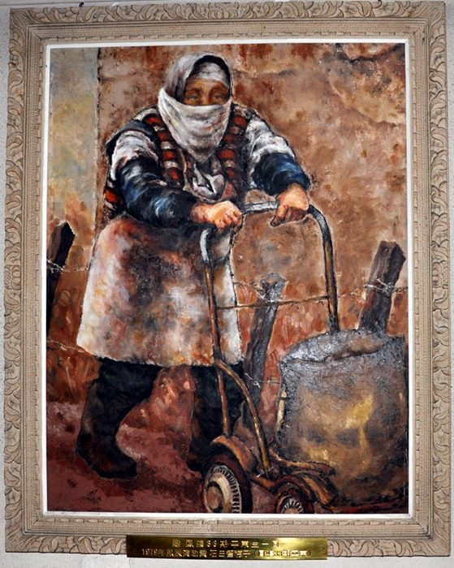
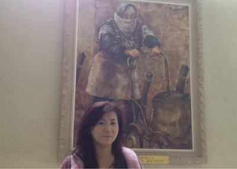

2009.06.14 01:15
30年前の油彩

わたしがこの絵を描いたのは15歳の時。
近所の畑の農作業から帰宅するおばあちゃんがモデルです。
油彩８０号で、実物はわたしの身長より大きいです。
この作品は、秋田県美術展覧会(県展)に出品して、奨励賞をいただきました。
当時、高校生の奨励賞受賞は秋田県史上初ということでした。
その発表の日がちょうど３０年前の今日でした。
不思議なことにちょうど、誕生日と重なったのでよく覚えています。
テレビと新聞で紹介していただき、とても嬉しかった記憶があります。
それで、母校の大館鳳鳴高校から作品を譲ってほしいと要望がありました。
立派な額に入れ、金色のネームプレートも付けて当時の真新しい新校舎に
第一号として飾っていただいた思い出の一枚です。
先日、この絵に数年ぶりに
対面してきました。
３０年経った今でもこうして校内に飾ってくださっていて感慨深いです。
たくさんの方々がご覧になってくださるから絵も幸せだと思います。
当時の美術の先生、そして母校に感謝しています。
